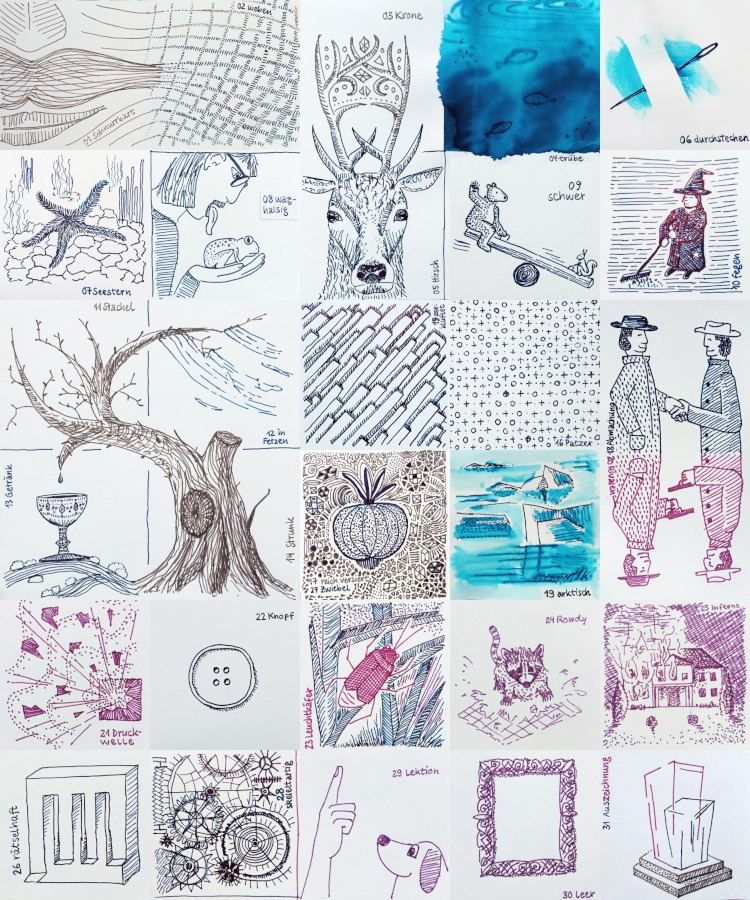

Manches soll nicht gleich in der Timeline versinken …
Auf dieser Website ist Raum für das, wofür meinem Mastodon-Account @charakterziffer zu kurzlebig ist. Mein Blog ist als Plus zu meinen Posts gedacht, eben „@cz+“. // Die letzten drei Artikel:
In den letzten drei Jahren hat es mit meinem guten Vorsatz nicht so gut geklappt. 2023–2025 hatte ich es mit einer Listen von 23–25 Dingen versucht, die mir im jeweiligen Jahr Freude bereiten sollen. Aber erstens sind mir gar nicht so viele Dinge eingefallen (weshalb ich den Vorsatz immer nochmal fortgeführt habe) und zweitens waren mir dann nicht alle geplanten Dinge so wichtig.
Immerhin habe ich einen Kreuzgang besucht, japanische Krimis gelesen, Theater gespielt, eine Schnitzeljagd gemacht, Windbeutel gebacken, Polarlichter betrachtet und bin mal wieder im Kino und in Museen gewesen. Ich hatte auch nette Leute zum Geburtstag und zum Krimidinner. Dagegen war ich noch immer nicht schwimmen, hab nicht wirklich Drachen steigen lassen und der längere Fahrradausflug steht auch noch aus. Andererseits sollte der Vorsatz ja Freude bereiten und keinen Freizeitstress erzeugen.
Neuauflage von 2018, aber anders
Fürs bevorstehende Jahr möchte ich vom Prinzip her den Vorsatz von vor acht Jahre neu auflegen. Da hatte ich in einem täglichen Vers einen besonderen Moment festgehalten. Ziel war, ein paar Erinnerungspflöcke in die stetig verfließende Zeit zu schlagen und schöne Momente bewusster wahrzunehmen. Und tatsächlich ist mir vieles aus jenem Jahr besser im Gedächtnis geblieben.
Auch 2026 möchte ich jeden Tag eine Kleinigkeit festhalten. Diesmal lege ich den Schwerpunkt auf das, was ich gelernt habe, was herausfordernd war, was mich irgendwie weitergebracht hat oder wo ich eine neue Erkenntnis gewonnen habe. Mal sehen, ob ich dadurch mehr über mich selbst erfahre, z.B. warum ich oft Verpflichtungen eingehe, die mir nicht immer gut tun, oder warum ich manche Dinge viel zu eilig erledige und andere erst auf den letzten Drücker.
Falls die Ergebnisse nicht zu persönlich sind, werde ich bestimmt hier im Blog berichten. – Habt ihr euch für dieses Jahr einen Vorsatz genommen?
Nicht mehr so regelmäßig, aber doch immer mal wieder male ich ein Bild fürs Fenster meines Arbeitszimmers. Es hängt so in der Scheibe, dass die Passanten draußen es sehen können. Für ein bisschen Abwechslung tausche ich das Bild alle paar Wochen aus, wenn ich eine neue Idee aufs Papier gebracht habe. Hier meine letzten zwölf Fensterbilder:
Mein Lieblingsbild dieser Serie sind die weißen Wellenlinien mit dazwischen Grau/Braun. Die Mona-Lisa entstand als Bild auf der Schreibmaschine und beim Blumenbouquet habe ich mich nochmal an Ölfarben gewagt. Für die drei fallenden Blätter im letzten Bild habe ich Pulverpigmente mit Wasser und Gummi arabicum zu einer farbintensiven Wasserfarbe angerührt und irgendwann nutze ich auch mal die Acrylfarben, die ich schon eine Weile gekauft habe.
Mit den ersten zwölf Fensterbildern habe ich begonnen, um das Malen zu üben, die zweite Serie hat mich ein bisschen frustriert und nun versuche ich, das ganze Vorhaben etwas lockerer zu sehen. Seid ihr kreativ tätig und verfolgt ein regelmäßiges Projekt, das euch zum Üben motiviert?
Im Internet bzw. auf Social Media gibt es jährlich eine kleine Kunstaktion namens „Inktober“ – vom englischen ink (Tinte) und (Ok)tober. Bereits 2009 hat der amerikanische Illustrator Jake Parker diesen Wettbewerb ins Leben gerufen. Seitdem gibt er jedes Jahr eine Liste mit Stichworten („Prompts“) heraus. Wer mitmachen möchte, fertigt dazu täglich eine Zeichnung mit Tinte an. In den offiziellen Regeln wird empfohlen, die Zeichnungen im Netz zu veröffentlichen und mit einem Hashtag zu markieren. So kann man sie leicht finden.
Es geht dabei nicht um irgendwelche Preise oder um die tollste Zeichnung. Die Prompts sollen vor allem anregen, überhaupt etwas zu zeichnen und anderen zu präsentieren. Entsprechend vielfältig sind die Bilder der Teilnehmenden: Von einfachen Drei-Strich-Skizzen bis zu mehrfarbigen digitalen Bildern. Ich mache zum dritten Mal beim Inktober mit und habe mit dem Füller jeweils in der Größe 7×7 cm skizziert:
Meine 31 Zeichnungen (Nr. 17+27 sind kombiniert) zu den folgenden Inktober-Stichworten: Schnurrbart, weben, Krone, trübe, Hirsch, durchstechen, Seestern, waghalsig, schwer, fegen, Stachel, in Fetzen, trinken, Strunk, zerklüftet, Patzer, reich verziert, Abmachung, arktisch, Rivalen, Druckwelle, Knopf, Leuchtkäfer, Rowdy, Inferno, rätselhaft, Zwiebel, skelettartig, Lektion, unbesetzt, Auszeichnung. (Die Abbildung verlinkt auf eine größere Ansicht)
Wie gesagt sind die Regeln recht offen (ausführlich auf Englisch erläutert in den FAQ). Man muss nicht jeden Tag mitzeichnen, kann die Zeichnungen auch analog ausstellen, kann digital arbeiten, mit Bleistift vorzeichnen, Kalligrafie anwenden. Zwar wird vorgeschlagen, nur mit (schwarzer) Tinte zu zeichnen, aber natürlich gehen auch Filzstifte, Wasserfarben und alles, womit man sich sonst noch kreativ ausdrücken möchte.
Man muss sich auch nicht unbedingt an die offiziellen Prompts halten – aber es ist schon interessant zu sehen, wie andere Zeichner:innen die gleichen Stichworte umsetzen. Ich scrolle da regelmäßig durch Mastodon und gucke, was unter dem Schlagwort „Inktober“ gepostet wird. Auf dem populäreren Instagram kann man das ohne Account leider nicht sehen.
Warum der Inktober boykottiert wurde/wird
Nicht verschweigen möchte ich, dass es um den Inktober-Erfinder Jake Parker zwei Kontroversen gegeben hat. 2019 ließ er sich die Markenrechte am Logo und am Wort „Inktober“ schützen. Laut seinem Blogartikel wollte er damit verhindern, dass Leute außerhalb der Community mit seinem Logo Werbeartikel verkaufen oder zu Hass und Gewalt aufrufen. Es gab wohl versehentliche und später eingestellte Abmahnungen an Künstler:innen, die ihre Inktober-Werke auf Etsy verkauft haben.
Der zweite Vorfall war im Jahr darauf, als Jake Parker eine Voransicht seines Anleitungsbuches Inktober All Year Round: Your Indispensable Guide to Drawing With Ink zeigte. Ein anderer Illustrator behauptete daraufhin in einem YouTube-Video, dieses Buch sei von seinem eigenen abgekupfert. (Das Originalvideo ist nicht mehr öffentlich, aber es gibt abwägende Videos, Video-Analysen und -Kommentare zu dem möglichen Plagiat). Das Gerichtsverfahren dazu wurde eingestellt, der Vorwurf führte jedoch zu Boykott-Aufrufen und vielen alternativen Zeichenwettbewerben im Oktober.
Das Wort kombiniert Persönlichkeit (Charakter) mit Sachlichem (Ziffer). Zusammengesetzt ergibt sich ein Synonym für Mediävalziffer, eine Zahlenvariante mit Ober- und Unterlängen.
Schriftarten dieses Blogs
Wenn dein Browser eingebettete Schriften (WOFF2) unterstützt, dann liest du die Fließtexte hier in der Source Sans Pro von Paul D. Hunt, erschienen 2012 bei Adobe.
Die Überschriften sind aus der czSlab gesetzt, die ich für dieses Blog gestaltet habe. Sie orientiert sich an Yanones viel ausgefeilterer Antithesis von 2014.
§ 1 Externe Links · Dieses Blog verlinkt auf Websites Dritter. Zum Zeitpunkt der erstmaligen Verlinkung waren dort keine Rechtsverstöße ersichtlich. Da ich keinen Einfluss auf fremde Websites habe, kann ich für deren Inhalte und Gestaltung keine Haftung übernehmen. Sollte ich von Rechtsverstößen erfahren, entferne ich die Verlinkung unverzüglich. Eine ständige Kontrolle der externen Links ist ohne konkrete Hinweise aber nicht zumutbar.
§ 2 Datenschutzerklärung · Mir ist der Schutz deiner Daten sehr wichtig. Deshalb verzichte ich auf Cookies, vermeide möglichst Dienste von Drittanbietern und erhebe so wenige Daten wie es geht. Diese Website kann ohne die Angabe persönlicher Daten genutzt werden.
Die einzige Ausnahme sind Kommentare. Wenn du einen meiner Texte kommentierst, bekomme ich die eingegebenen Daten und eine Zeitangabe per (prinzipiell unsicherer) E-Mail zugestellt. Falls dein Kommentar sachlich zur Diskussion beiträgt, ergänze ich ihn öffentlich sichtbar unter dem entsprechenden Artikel. Dabei sind sämtliche Angaben freiwillig (Name, Website, Mailadresse, Kommentar) – auch anonyme Kommentare sind möglich.
§ 3 Widerspruch gegen Direktwerbung · Die Verwendung meiner Kontaktdaten zur gewerblichen Werbung ist ausdrücklich nicht erwünscht; ich widerspreche hiermit jeder kommerziellen Nutzung und Weitergabe meiner Daten (gemäß § 21 DSGVO). // Über private Fanpost freue ich mich allerdings sehr und antworte darauf mit großem Vergnügen!
 @charak
@charak